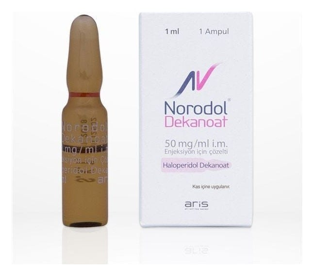

Norodol Dekanoat 50 mg/ml IM Enjeksiyon İçin Çözelti 1 ml, 5 Ampul

Ne için kullanılır
KT · Bölüm 12. NORODOL®DEKANOAT’ı kullanmadan önce dikkat edilmesi gerekenler 3. NORODOL®DEKANOAT nasıl kullanılır? 4. Olası yan etkiler nelerdir? 5. NORODOL®DEKANOAT’ın saklanması
Başlıkları yer almaktadır.
1.NORODOL®DEKANOAT nedir ve ne için kullanılır?
NORODOL®DEKANOAT butirofenon türevleri grubuna dahildir, nöroleptikler grubuna dahil olan haloperidol dekanoat içerir.
NORODOL®DEKANOAT; 1ml ve 3ml’lik çözelti içeren amber renkli cam ampullerde, 1 ampul içeren ambalajlarda temin edilebilir.
NORODOL®DEKANOAT, antipsikotiklerle uzun dönemli idame tedavisinin gerektiği örneğin şizofreni [kafa karışıklığı, aslında olmayan şeylerin görülmesi, duyulması veya hissedilmesi (halüsinasyonlar), gerçekte olmayan şeylere inanılması (hezeyan), olağandışı şüphecilik (paranoya), aşırı heyecanlı, coşkulu veya hiperaktif, aşırı saldırgan veya öfkeli hissetme durumu gibi belirtileri olan] grubu psikotik bozukluklar gibi durumlarda endikedir.